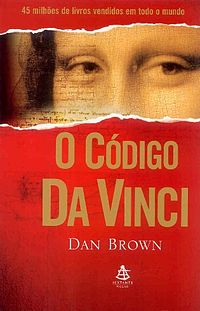
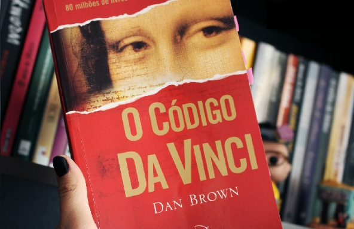

O Código da Vinci

O Livro Código da Vinci
O Código Da Vinci (título original: The Da Vinci Code) é um thriller norte-americano
de 2006, dirigido por Ron Howard. O guião foi escrito por Akiva Goldsman
baseado no bestseller de Dan Brown, The Da Vinci Code. Foi produzido por
Howard juntamente com John Calley e Brian Grazer e lançado pela Columbia
Pictures nos Estados Unidos a 19 de Maio de 2006.
O filme teve uma bilheteria tão boa, que já foi feita a continuação de
O Código da Vinci, o livro Anjos e Demónios PT ou Anjos e Demônios BR de
Dan Brown como a primeira aventura de Robert Langdon. Um livro não muito
polêmico como seu sucessor. O livro foi escrito antes de O código da Vinci,
apesar desse ter sido lançado primeiro como filme.
O Código Da Vinci causou polêmica ao questionar a divindade de Jesus Cristo.
A maior parte do livro desenrola-se a partir do assassinato de Jacques
Saunière, curador do museu do Louvre. Robert Langdon, Sophie Neveu e Leigh
Teabing vivem várias aventuras ao tentar desvendar códigos que deem resposta
aos enigmas que Jacques Saunière deixou no leito de morte.
A trama do livro envolve desde grandes organizações católicas como o Opus
Dei, até a sociedade secreta conhecida como Priorado de Sião, que, de acordo
com documentos encontrados na Biblioteca Nacional de Paris, possuía inúmeros
membros famosos como Sir Isaac Newton, Botticelli, Victor Hugo e Leonardo
da Vinci.
As Críticas Sobre O Livro e o Filme de O Código da Vinci

O Livro Código da Vinci Escrito Por Dan Brown
Apesar de o livro afirmar que todas as descrições de obras de arte, arquitetura,
documentos e rituais secretos lá contidas seriam apuradas, argumenta-se
que muito do que Brown escreveu é factualmente impreciso. O livro tem recebido
críticas de religiosos, argumentando que Brown distorceu os fatos históricos.
O modo controverso como Dan Brown trata a Igreja Católica tem eliciado
muitas críticas. Dentre elas podemos destacar a do professor de teologia
da PUC-SP "É uma ficção e deve ser lido assim. O Jesus que aparece no livro
nada tem haver com a figura histórica de Jesus Cristo. O autor batizou
o personagem dele com o mesmo nome claramente para gerar polêmica, simplesmente
porque a discussão ajuda a vender os livros".
Outra crítica é que Dan Brown parece ignorar são os aspectos da arte renascentista
na qual os jovens que ainda não eram homens feitos eram retratados com
traços andróginos, e sem barba como ocorre no quadro a "Última Ceia" sem
falar que o foco do quadro era a traição de Judas e não a ceia por isso
o cálice não está presente (João 13:21-30) e que a faca presente na mão
de Pedro provavelmente está relacionado ao fato de na mesma noite Pedro
ter cortado a orelha de Malco. E em que nenhum dos evangelhos apócrifos
que Dan Brown cita menciona um relacionamento romântico ou esponsal entre
Jesus e Maria Madalena.
O filme recebera muitas críticas no Festival de Cannes. Fãs do livro de
Dan Brown alegam que o filme não passa a verdadeira mensagem que o livro
traz. Mesmo com toda essa crítica o filme foi recorde de bilheteria de,
aproximadamente, US$ 760 milhões nas bilheterias do mundo inteiro. Membros
da Igreja defenderam um boicote contra "O Código da Vinci" quando foi lançado
em 2006, mas teve um efeito muito pequeno na popularidade do filme.